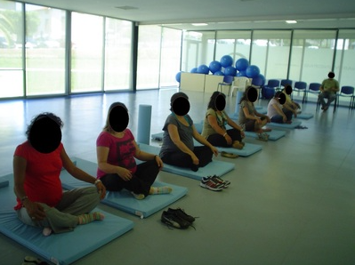

Preparação para o Parto e Parentalidade
O referido programa, existente neste Centro de Saúde desde o ano 2007, foi incluído nos
programas da UCC de Albergaria-a-Velha, desde que esta foi oficialmente homologada a 09/12/2010.
Tem como objectivo primordial a preparação de casais, futuros pais, munindo-os de
conhecimentos técnicos e científicos que lhes permitem enfrentar de forma mais tranquila
e segura esta nova fase de suas vidas, fomentando a sua saúde individual e familiar.
O Curso, visa preparar os casais para o parto mas também para a maternidade/paternidade saudáveis.
Divide-se em aulas teóricas e práticas.
Nas aulas teóricas são abordados os temas:
-
a analgesia epidural;
- o desenvolvimento intra-uterino;
- a amamentação;
- o trabalho de parto;
-
os cuidados ao recém-nascido;
- o pós parto;
- o transporte seguro do recém-nascido;
- a massagem
ao bebé e a saúde oral na gravidez.
Nas aulas práticas são realizados:
- exercícios de tonificação muscular da musculatura abdominal
e pélvica;
- exercícios de relaxamento e concentração;
- de respiração;
- de treino do período expulsivo;
-
entre outros.
No decorrer do curso é ainda organizada uma visita à sala de partos do Centro Hospitalar Baixo Vouga - Aveiro (Hospital de referência), que permite aos casais um contacto antecipado com a sala de partos de forma a reduzir o medo do desconhecido, a desmistificar ideias erróneas acerca do parto e a conhecer o circuito da grávida/acompanhante desde a sua admissão no hospital até ao momento da alta.
As aulas têm uma frequência bissemanal, com uma duração prevista entre 60 a 90 minutos cada, preferencialmente a partir das 28 semanas de gestação até ao parto.
Em todas as aulas haverá espaço para esclarecimento de duvidas e ou partilha de experiências positivas.
Responsável pelo programa
Isabel Cruz - Enfermeira Especialista de Saúde Materna e Obstétrica, Conselheira em Aleitamento Materno.
